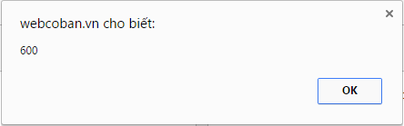

Cách tìm và sửa những câu lệnh bị lỗi
- Trong một chương trình JavaScript, các câu lệnh được thực thi lần lượt theo thứ tự từ trên xuống dưới. Nếu một câu lệnh bị lỗi thì tất cả những câu lệnh còn lại (nằm phía sau câu lệnh bị lỗi) sẽ không được thực thi và trên màn hình không hiển thị bất kỳ một thông báo lỗi nào.
- Điều đó khiến chúng ta hết sức khó khăn trong việc tìm ra câu lệnh bị lỗi để khắc phục, nếu chương trình chỉ có khoảng vài dòng hoặc vài chục dòng lệnh thì còn có thể mò ra được, chứ lên đến vài trăm hoặc vài nghìn dòng thì việc mò ra câu lệnh nào bị lỗi dường như là điều bất khả thi.
- Tuy nhiên, thật may mắn là các trình duyệt ngày nay rất hiện đại, chúng đã được tích hợp sẵn bộ công cụ giúp tìm kiếm và gỡ lỗi.
Hầu hết các trình duyệt hiện nay như: Chrome, Mozilla Firefox, Cốc Cốc, .... đều có chung một cách mở bộ công cụ đó chính là bấm phím F12 rồi chọn vào tab Console.
- Dưới đây là một ví dụ minh họa về cách tìm và sửa những câu lệnh bị lỗi trong chương trình JavaScript bằng việc sử dụng Console trên trình duyệt.
- Chúng ta có một đoạn mã như sau:
- Khi thực thi thì chương trình bị lỗi, mở Console lên sẽ thấy thông báo lỗi được chia làm hai cột:
- Cột thứ nhất cho biết: "câu lệnh bị lỗi gì"
- Cột thứ hai cho biết: "câu lệnh bị lỗi nằm ở dòng thứ mấy"
(Ở đây là dòng lệnh thứ tư bị lỗi cú pháp, vì var mà lại ghi thành varr)
- Sau khi sửa varr thành var, ta cho chương trình chạy lại thì nó vẫn tiếp tục bị lỗi.
- Mở Console lên thấy:
(Ở đây là dòng lệnh thứ sáu bị lỗi vì biến number45 chưa được khai báo)
- Sau khi sửa lại biến number45 thành number4 thì chương trình hết lỗi và thực thi bình thường.

Kết luận: Việc tìm và sửa những câu lệnh bị lỗi trong một chương trình JavaScript đã trở nên vô cùng dễ dàng hơn bao giờ hết với công cụ Console trên trình duyệt. Ta chỉ cần tìm và sửa lần lượt từng câu một theo thứ tự từ trên xuống, rồi mọi vấn đề cũng sẽ được giải quyết.